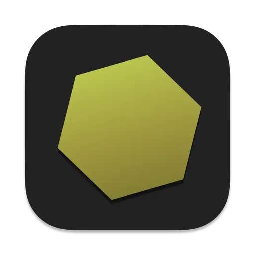

NectarView
The Next Gen Manga Viewer for macOS
macOS用 次世代マンガビューア
A fast, native comic viewer inspired by HoneyView. Open archives directly, enjoy smooth page turning, and immerse yourself in reading.
HoneyViewにインスパイアされた高速ネイティブビューア。アーカイブを直接開き、滑らかなページめくりで読書に没頭できます。